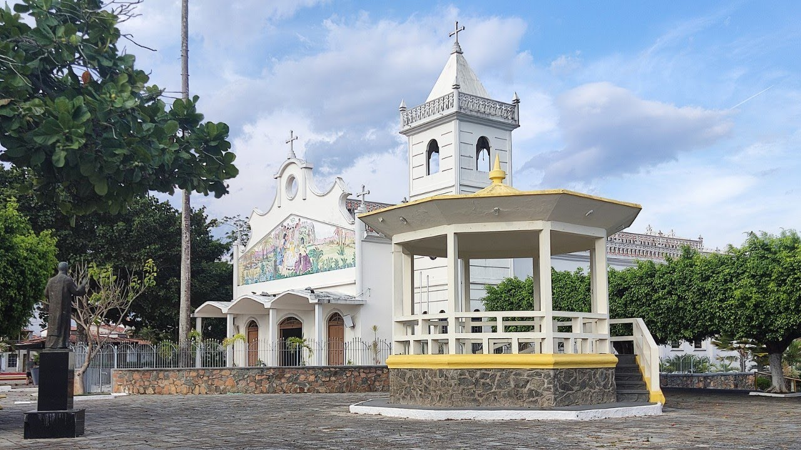
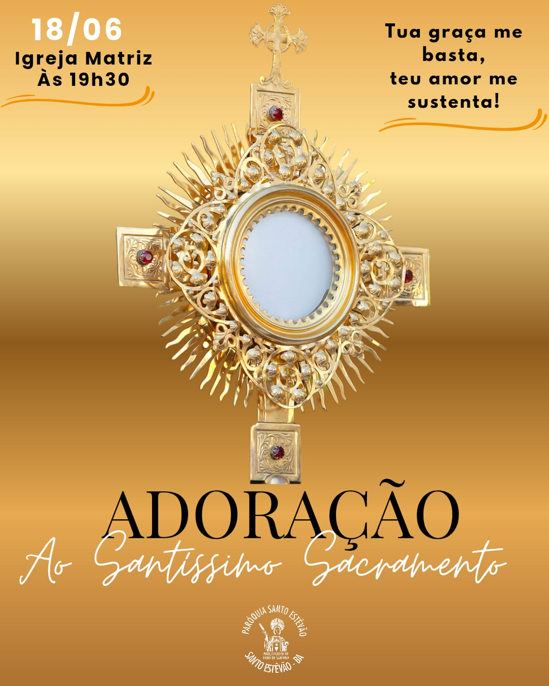
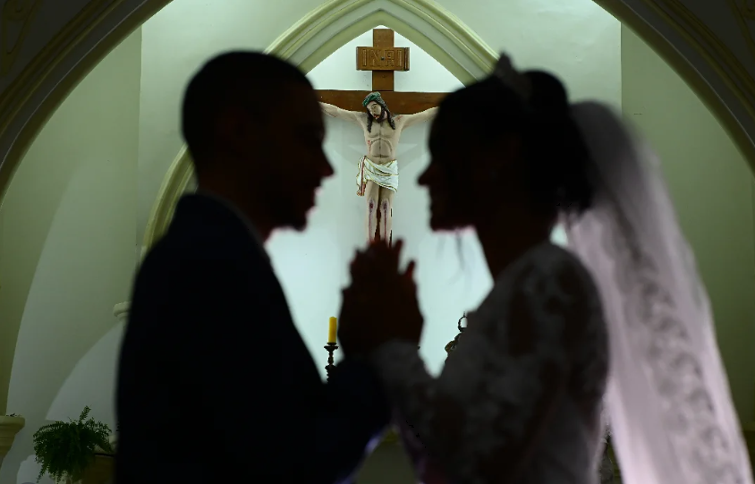
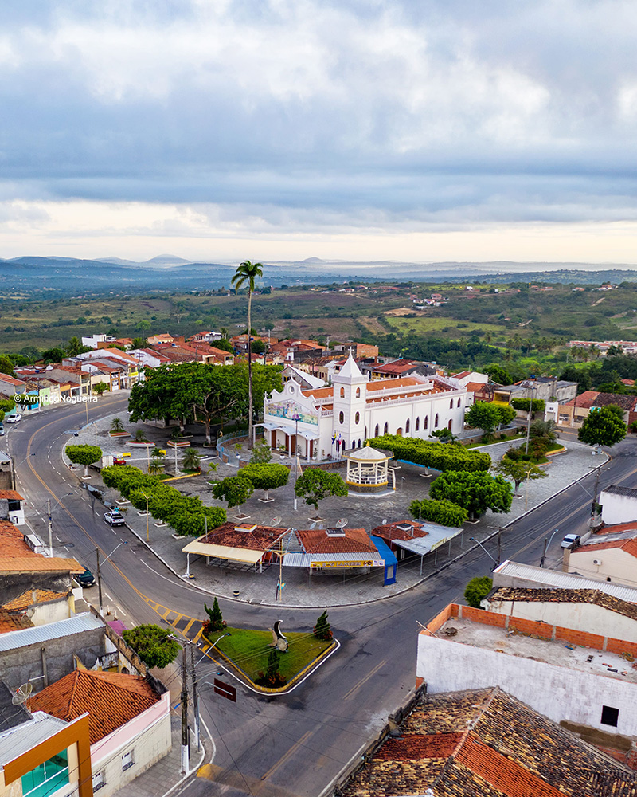

26
Dez
Festa de Santo Estevão
Missa solene, novenário e procissão pelas ruas da cidade em honra ao padroeiro.
Igreja MatrizVenha celebrar conosco. Confira os avisos semanais.

Os sacramentos são sinais visíveis da graça de Deus em nossas vidas.
O início de uma nova vida em Cristo. Agende a preparação e o batismo do seu filho.
Agendamentos
A união sagrada abençoada por Deus. Informações sobre cursos de noivos e reservas.
InformaçõesUm ato de amor, gratidão e partilha. Ajude a manter as obras de nossa paróquia.
Como ContribuirA Paróquia de Santo Estevão é o coração espiritual do município de Santo Estevão, Bahia. Fundada para servir à comunidade local, é um lugar de fé, acolhimento e transformação.
Sob a proteção de Santo Estevão, o primeiro mártir da Igreja, nossa comunidade se une para celebrar a fé, servir ao próximo e crescer espiritualmente. Realizamos diversas atividades ao longo do ano, incluindo a Semana Santa, a Festa do Padroeiro (26 de dezembro) e a Festa da Colheita.
Fazemos parte da Arquidiocese de Feira de Santana, reunindo diversas capelas e comunidades na região.
Nossas PastoraisHá um espaço de missão para todos em nossa comunidade de fé.
Formação na fé para crianças, jovens e adultos. Batismo, 1ª Eucaristia e Crisma.
Apoio e fortalecimento dos vínculos familiares à luz do Evangelho.
Oração comunitária, adoração eucarística e renovação espiritual.
Animação litúrgica das celebrações com cânticos e instrumentos.
Obras de misericórdia e serviço fraterno aos mais necessitados.
Encontro, formação e missão para os jovens da paróquia.
Fique por dentro das celebrações e eventos especiais ao longo do ano.
Missa solene, novenário e procissão pelas ruas da cidade em honra ao padroeiro.
Igreja MatrizVia Sacra, Tríduo Pascal e celebrações da Paixão, Morte e Ressurreição de Cristo.
Igreja Matriz e CidadeNovenário especial e procissão em honra à Nossa Senhora durante o mês mariano.
Igreja MatrizProcissão do Santíssimo Sacramento pelas ruas do Centro com tapetes decorados.
Centro da CidadeMomentos e espaços da nossa comunidade.



Estamos aqui para acolher você. Venha nos visitar ou entre em contato.
Praça da Bandeira, s/nº, Centro
Santo Estevão – BA, CEP 44.190-000
Seg–Sex: 08h às 12h e 14h às 17h
Sábados: 08h às 12h